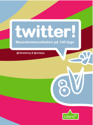

Velkommen til sitet for bogen Twitter - Massekommunikation på 140 tegn. Bogen er skrevet af @saxberg og @webjay. Bogen er udgivet af Forlaget Libris hvor den kan købes online.
- ISBN
- 978-87-7843-880-5
Henter indhold... 

Deltag ved at tweete om bogen og hold dig opdateret ved at følge #twitterbogen, saxberg og webjay.
Deltag ved at tweete om bogen og hold dig opdateret ved at følge #twitterbogen, saxberg og webjay.
Links fra bogen
- Twitter - Wikipedia, the free encyclopedia
- Wikipedias definition på Twitter.
- Twitters webadresse.
- How Many Users Does Twitter Have?
- Hvor mange brugere har Twitter?
- Danskere på twitter
- Side med danskere på twitter og deres tweets.
- Danskere på twitter - statistik
- Dansk Twitter-statistik.
- Twitter Search
- Twitters søgeside
- Popular Stories - www
- Nyhedssite hvor det er læseren der vælger hvilke historier der når overskrifterne.
- Companies using Twitter « Fluent Simplicity
- Blog om virksomheder der benytter Twitter.
- IdeaStorm
- Dells website hvor alle herunder kunder kan komme med ideer til Dell og støtte de ideer der er registeret.
- Salesforce IdeaExchange
- Her kan alle komme med ideer, stemme på dem, kommentere og ikke mindst se hvilke ideer der er registreret.
- CNN Heavily Promoting Twitter On Air, Making Big Moves in Social Media
- Artikel om CNN ́s brug af Twitter.
- There's a plane in the Hudson. I'm on the ferry going to pick... on Twitpic
- Billedet af flyet i Hudson-floden.
- Twitter first off the mark with Hudson plane crash coverage - Editors Weblog
- Artikel om Twitters dækning af flyet i Hudson-floden.
- The 2.0 Life - Live Digitally
- tilbyder en række artikler om bl.a. Twitter.
- President Obama’s New Twitter Feed - Gadgetwise Blog - NYTimes.com
- Artikel om den amerikanske præsident Barack Obamas Twitter feed.
- http://www.gartner.com
- kilde til en række analyser
- Twitterrific
- Mobil og desktop Twitter-klient-applikation.
- TweetDeck
- Twitter-klient.
- twitterfeed.com : feed your blog to twitter
- Konvertere feeds til tweets.
- Top Twitter Tools List
- Liste over Twitter-værktøjer.
- Twitter Tips - TwiTip
- Blog om Twitter.
- MultiSocialMedia.com
- Blog om sociale medier, herunder Twitter.
- Maslows behovspyramide - Wikipedia, den frie encyklopædi
- Præcisering af Maslows behovspyramide.
- Here Comes Twitter Spam And How To Fight It
- Artikel om bekæmpelse af spam på Twitter.
- Please Sir, how do you re-tweet? – Twitter to be taught in UK primary schools
- Artikel om den engelske regerings forslag om undervisning af Twitter i folkeskolen.
- Project Management Software, Online Collaboration and Document Sharing ~ Huddle
- Support-case.
- CNN.com - Breaking News, U.S., World, Weather, Entertainment & Video News
- CNN-case
- GLS Bank: Ihre Bank für sozial-ökologische Geldanlagen und Finanzierungen - GLS Bank
- Økologisk tysk bank-case.
- M&M's
- Markedsføringscase fra M&M's.
- Kvidrende vækst på nettet - IT & tele
- Dansk artikel om Twitter, herunder anslået antal Twitter-brugere i Danmark.
- What San Francisco/Silicon Valley can learn from the Twittering company: Zappos
- Om virksomheden Zappo og deres brug af Twitter.
- Obama and Twitter: White House Social-Networking - TIME
- Artikel om Præsident Obama og Twitter.
- Most valuable and under-used social media strategy | Bloghound
- Artikel om kundeanbefalinger som social medie strategi.
- Positives About Negative Product Reviews - iMediaConnection.com
- Kundeanbefalinger, herunder positive og negative produkt bedømmelser.
- Twitter To Go: How one local coffee shop used Twitter to double their clientele. What’s YOUR story? | Blog of Mr. Tweet
- Artikel om hvordan en caféejer fordoblede sit klientel ved hjælp af Twitter.
- On Twitter, Most People Are Sheep: 80 Percent Of Accounts Have Fewer Than 10 Followers
- Hvordan vores sociale adfærd påvirker os i forhold til masserne.
- Google Trends for Websites: twitter.com, facebook.com
- Statistik på antal daglige besøgende på Twitter versus Facebook.
- Employer branding - Wikipedia, the free encyclopedia
- Definition på employer branding.
- Blame Drew's Cancer - Blow off Steam on Twitter... for Charity!
- Blame Drews kræftsygdom - hjemmesiden bag.
- Interactive Knowhow
- blog om det sociale web.
- Iranian presidential election, 2009 - Wikipedia, the free encyclopedia
- Fakta om det iranske valg i 2009.
- U.S. Government Asks Twitter to Stay Up for #IranElection Crisis
- Den amerikanske regering beder Twitter om at vente med opdatering af deres system.
- HOW TO: Track Iran Election with Twitter and Social Media
- Artikel om det iranske valg på Twitter.
- OPERATION: WE'RE GOING IN! on Flickr - Photo Sharing!
- Fotokilde til billede, valg i Iran.
- >Twitter / Iranian Student: From Enghelab square my fr ...
- Kilde til tweet.
- Overskrift.dk - danske Twitter profil-billeder
- Danskere på Twitter.
- Facebook | COP15 UN Climate Change Conference 2009
- COP15 på Facebook.
- Twitter Crowns Bit.ly As The King of Short Links; Here's What It Means
- Artikel om Twitters valg af bit.ly som default link-forkorter.
- Twitter Blog
- Twitters officielle blog.